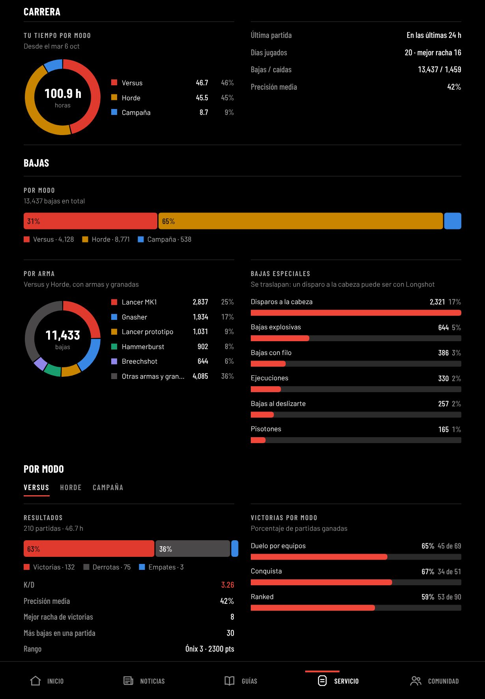
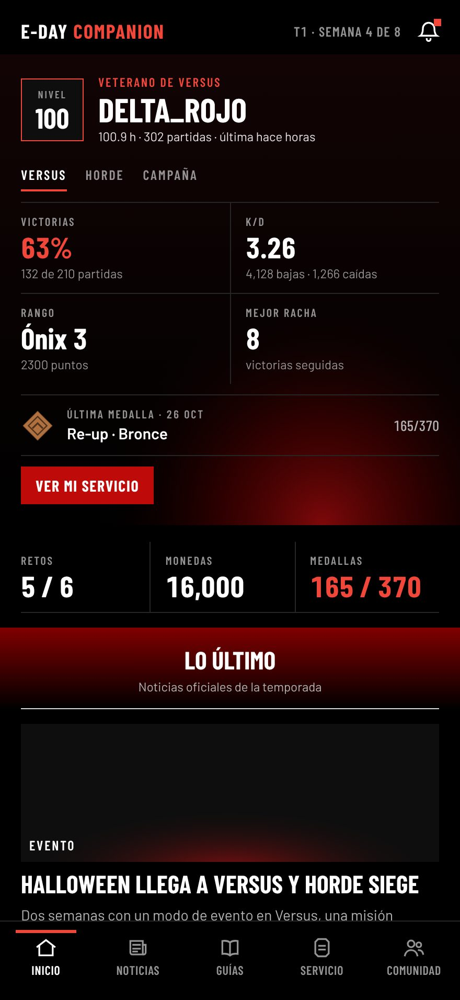
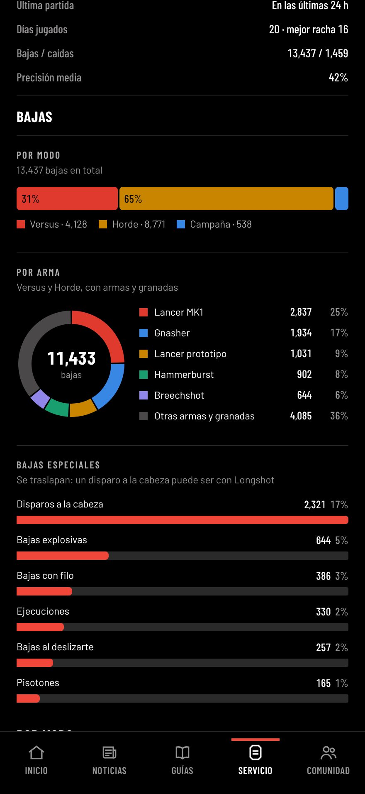
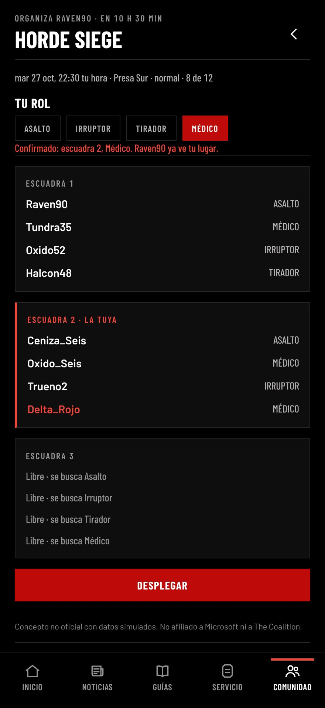
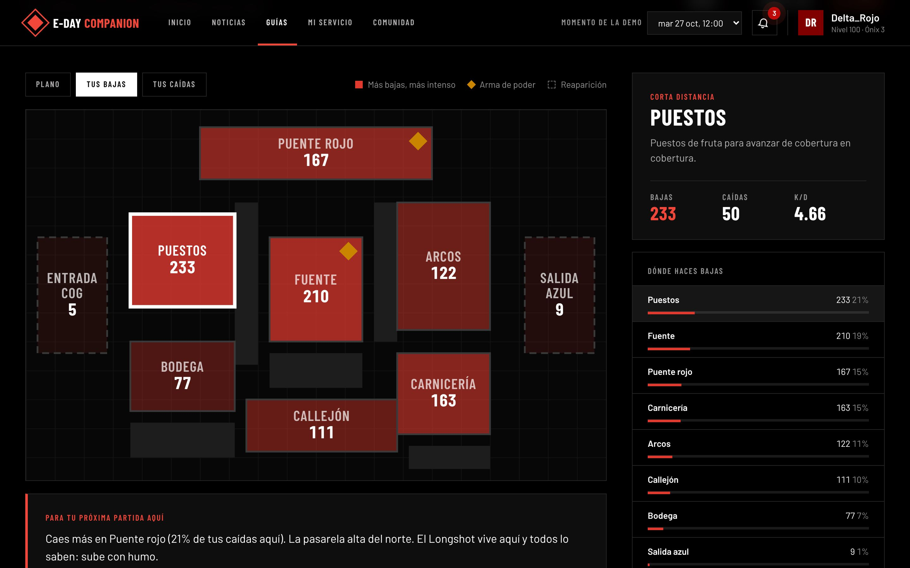
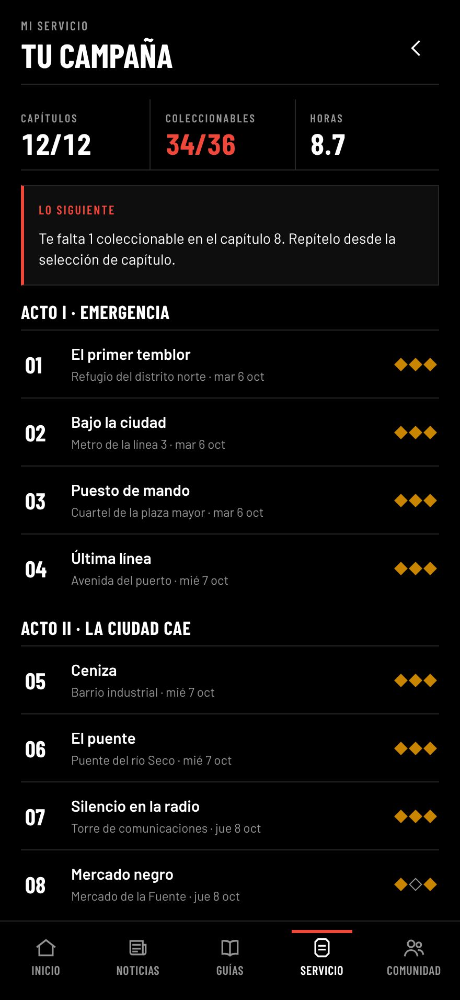

Ana
Tried it on Game Pass · Xbox Series S
I don't know what to do next; other games are waiting.
- What would bring her back
- A short goal with a clear reward
- In the app
- Home with her week, and the store
The companion app Gears of War: E-Day could have if it were official: news, guides, your service record and Horde squads, on phone, tablet and web.
Not affiliated with Microsoft, Xbox or The Coalition. No logos, art or fonts from the game; maps, brands and creators are invented. The app's interface is in Spanish, for players in Latin America and Spain.
E-Day launched on October 6, 2026 on Game Pass. Alinea Analytics estimates describe a launch with wide reach and weak retention:
Source: Alinea Analytics, third-party estimates.
Outside the game, nothing gave that player a concrete reason to come back: not their numbers, not a goal for the week, not an easy way to get a squad together.
If people who tried E-Day get a short, personal goal each week, more of them come back in their second week.
Proto-personas: hypotheses built from the retention data and public reviews, not from interviews.
I don't know what to do next; other games are waiting.
I can't see my stats or how I stack up against others.
Getting 12 people together over WhatsApp is chaos.
The 10 key screens were designed in two visual directions and put through a synthetic test: 10 simulated profiles, built from real player reviews, walked through the app with concrete tasks. It doesn't replace testing with people, but it found problems before any code was written.
Navigation worked. Every profile found their match, the store and their squad.
Little desire to install it. The weekly mission always suggested Ranked, even when the profile only played Horde or campaign.
Preference for direction A over B, for legibility.
Six changes came out of it: a mission based on the mode you play, local time everywhere, Coins and Iron balance with the weekly cap, a planner that confirms your role, squad filters, and leaderboards for Horde too.
What players ask for in forums, reviews and videos is broader than a mission: they want to know what changed in the last patch, learn a Horde class and see their own numbers. The game also has no leaderboards or private matches, so an official app could offer them first.
Halo Waypoint is the closest reference: the official hub of an Xbox franchise that brings together news, the player's service record and community. Its mobile app shut down in 2023 and it now lives on the web, which made it clear the web version matters too. The structure settled into five tabs:
Your numbers by mode, your week, the store, the calendar and what's new.
Patches, events and seasons, with notes that make sense.
Horde classes and builds, weapons, maps and collectibles, official and from creators.
Career in charts, 74 medal series, achievements, history and leaderboards.
Squads with roles, your clan, creators and the Horde planner.
Military panels and stencil-style type. Won the synthetic test on legibility.
A game interface laid over the app. Striking, but tiring on long screens.
An official app would follow the brand. It borrows the game site's language: black, a red band, square corners, Barlow Condensed.
#000000#800000#BF0A0A#F0473A#959393The site's red text was lightened slightly, from #E43127 to #F0473A, to pass 4.5:1 on a dark background. The art is original: glows and gradients instead of game imagery.
302 matches and 100 hours don't fit in a list. My service breaks them into what the player wants to know: which mode takes their time, which weapon gets their kills, against which enemies and at what time of day they play.


Six slices at most; the rest folds into "Other", always grey and always last.
Wins per map or best wave per map are bars on a shared baseline, in a single color.
Six colors checked for color blindness on the dark background, with the brand red first.
Every chart labels its parts with value and percentage, and every part can be tapped or focused with the keyboard.
The phone is for quick things: checking the last match, seeing whether Friday's squad is full. The web is where you read a guide or look back on the season, so it gets more room and more motion: a 3D medal on the home page, numbers that count up, cards that tilt under the cursor.





With the foundation done, I added what brings people back to Halo Waypoint and to stats apps: knowing where you lose on each map, which weapon suits you, what's left in the campaign and how you stack up against your friends. Each one came from the same contract, first in the simulated backend with its tests, then in the app and on the web.




Without real access to the game's servers, everything starts from an OpenAPI contract that describes the API an official app would need. Types are generated from that contract, and a simulated backend implements it inside the browser, so the demo runs without a server and the app and the web read exactly the same data.
A demo clock jumps between four moments of the season (a Tuesday at noon, an hour before Horde, the Friday of the clan session, the day the store rotates) and everything is recalculated: notifications, mission, squads and store.
43 operations: player, service record, medals, matches, store, sessions, clans, news, guides, maps, weapons, campaign and comparison.
contract/openapi.yamlTypeScript generated from the contract, shared across the whole repository.
packages/api-typesImplements the contract with deterministic data; runs in the browser or as an HTTP server.
apps/api-mockExpo and Expo Router for phone and tablet; Vite, React, Tailwind and three.js for the web.
apps/mobile · apps/webThe last two figures come from the polish week: contrast and roles fixed in charts and filters, and three.js split out so it loads after the page. The four new tools also load separately, the first time they are opened.
Everything in the demo is simulated, so there are no results to show off. This is what I would measure with real players:
| Metric | Type | Definition |
|---|---|---|
| Week 2 return | Primary | Players with at least one match between days 8 and 14 after their first |
| Squad sessions played | Supporting | Sessions created in the app that end in a match |
| Reports opened | Supporting | Matches whose report is opened within 24 hours |
| Store alerts opened | Supporting | Wishlist alerts that get opened |
| Notifications turned off | Guardrail | Users who turn notifications off, so the app doesn't get pushy |
Repeat the three walkthroughs with real Game Pass players, Ranked players and Horde clans.
The web passes axe; the app still needs a VoiceOver and TalkBack pass on real devices.
Swap the simulated backend for the real API without touching the screens, since both follow the same contract.